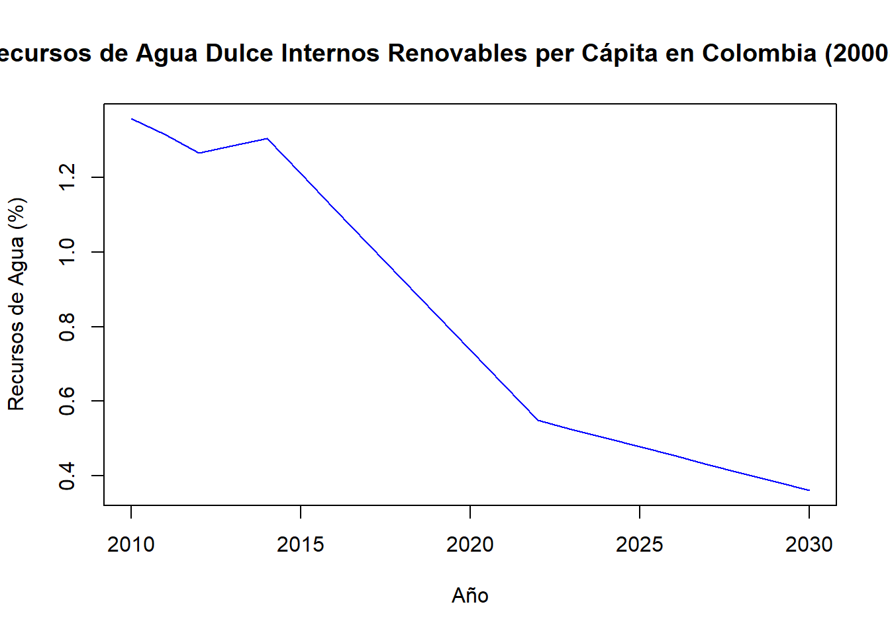
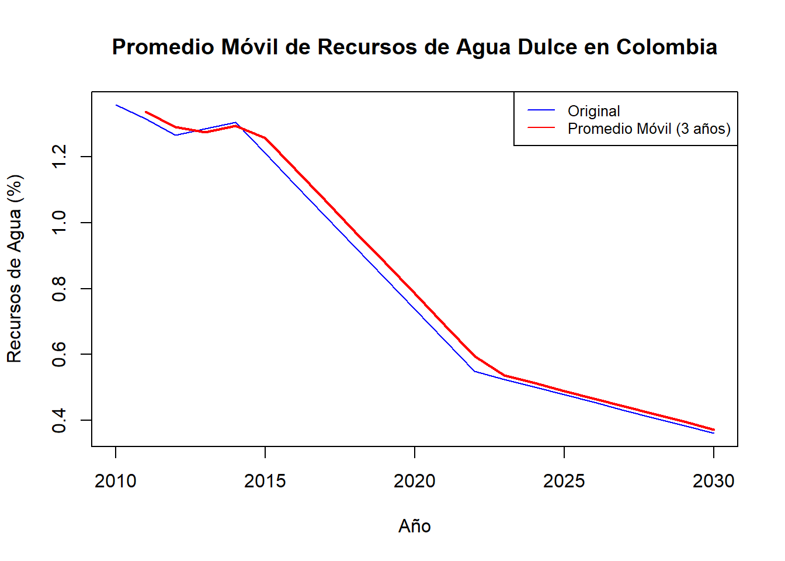
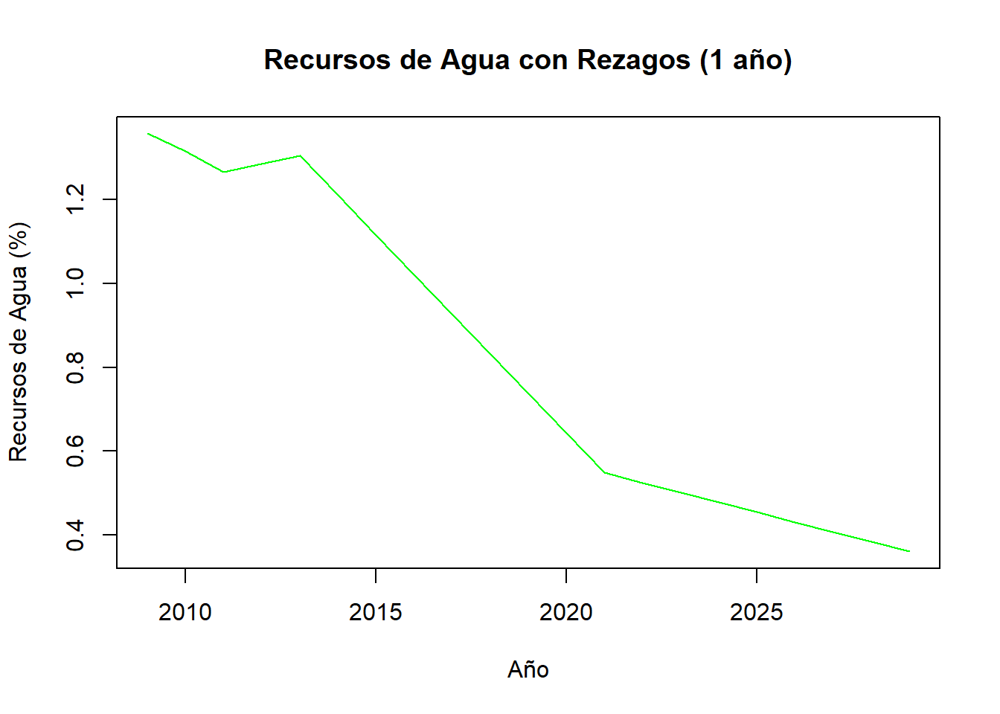
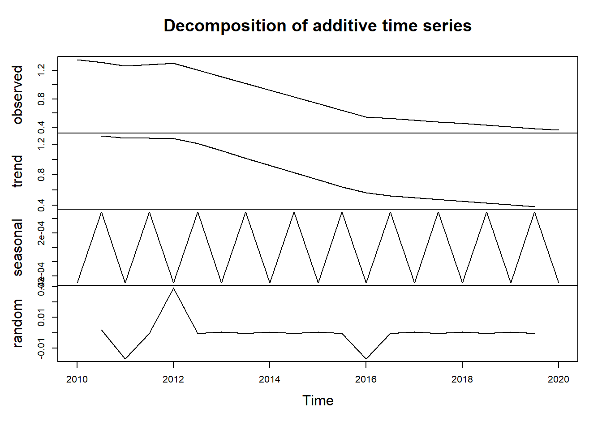

2 Unidad 2
Se debe continuar con los datos presentados en dicho entregable y se debe evidenciar, en una de las variables en el tiempo, la aproximación en promedio móvil, en rezagos y en estacionalidad. Todo lo anterior, a través de funciones y gráficas que permitan detectar patrones y ciclos de la variable.
# Descargar datos de recursos de agua dulce internos renovables per cápita para Colombia (2000-2022)
water_data_colombia <- WDI(indicator = "ER.H2O.FWTL.ZS", country = "CO", start = 2000, end = 2020)
# Mostrar las primeras 5 líneas del dataset
head(water_data_colombia, 5)## country iso2c iso3c year ER.H2O.FWTL.ZS
## 1 Colombia CO COL 2020 1.357374
## 2 Colombia CO COL 2019 1.316311
## 3 Colombia CO COL 2018 1.265451
## 4 Colombia CO COL 2017 1.285018
## 5 Colombia CO COL 2016 1.304585Este código carga el paquete WDI, descarga datos sobre recursos de agua dulce renovables per cápita para Colombia desde el año 2000 hasta 2020, muestra las primeras 5 filas del dataframe resultante y elimina cualquier fila que contenga valores nulos.
2.1 Variables en el tiempo:
# Convertir los datos a una serie temporal
water_ts <- ts(water_data_colombia$ER.H2O.FWTL.ZS, start = c(2010, 1), frequency = 1 )
# Mostrar la serie temporal
plot(water_ts, main = "Recursos de Agua Dulce Internos Renovables per Cápita en Colombia (2000-2020)", ylab = "Recursos de Agua (%)", xlab = "Año", col = "blue")
## Min. 1st Qu. Median Mean 3rd Qu. Max.
## 0.3611 0.4783 0.7374 0.8147 1.2101 1.3574La serie temporal muestra una tendencia general descendente. En 2010, el valor era más alto (cerca del 1.2%), pero para 2020 ha bajado considerablemente, llegando a menos del 0.4%.
Esto indica que los recursos de agua dulce disponibles por persona en Colombia han disminuido en este periodo, lo que podría estar relacionado con factores como el cambio climático, la reducción de fuentes de agua, aumento de la población, entre otros.
2.2 Calcular el promedio móvil simple
## Warning: package 'TTR' was built under R version 4.3.3promedio_movil <- SMA(water_ts, n = 2)
# Graficar la serie original y el promedio móvil
plot(water_ts, type = "l", col = "blue", main = "Promedio Móvil de Recursos de Agua Dulce en Colombia", ylab = "Recursos de Agua (%)", xlab = "Año")
lines(promedio_movil, col = "red", lwd = 2)
legend("topright", legend = c("Original", "Promedio Móvil (3 años)"), col = c("blue", "red"), lty = 1, cex = 0.8)
El propósito del promedio móvil es suavizar las fluctuaciones en los datos y permitir ver tendencias más claras a lo largo del tiempo. A simple vista, ambas líneas siguen trayectorias similares, pero la línea roja (promedio móvil) suaviza las pequeñas variaciones de la serie original. Se observa una clara tendencia descendente que se mantiene en ambos casos, aunque el promedio móvil reduce algunas de las fluctuaciones a corto plazo.
2.3 Rezago
# Crear un rezago de 1 año
water_lag <- lag(water_ts, k = 1)
# Graficar el rezago
plot(water_lag, type = "l", col = "green", main = "Recursos de Agua con Rezagos (1 año)", ylab = "Recursos de Agua (%)", xlab = "Año")
Tendencia descendente: Al aplicar el rezago, se mantiene la tendencia a la baja en los recursos de agua per cápita, lo que refuerza la observación original: los recursos han ido disminuyendo a lo largo del tiempo. Este tipo de análisis con rezagos es útil para observar efectos de autocorrelación en series temporales. Si encuentras una fuerte correlación entre los valores actuales y sus rezagos, se podria utilizar esa información para hacer predicciones futuras.
2.4 Estacionalidad
water_ts <- ts(water_data_colombia$ER.H2O.FWTL.ZS, start = c(2010, 1), frequency = 2 )
print(water_ts)## Time Series:
## Start = c(2010, 1)
## End = c(2020, 1)
## Frequency = 2
## [1] 1.3573739 1.3163111 1.2654508 1.2850179 1.3045850 1.2100608 1.1155366 1.0210125 0.9264883 0.8319641
## [11] 0.7374399 0.6429158 0.5487179 0.5251457 0.5017133 0.4782809 0.4548485 0.4314161 0.4079837 0.3845688
## [21] 0.3611189# Descomposición de la serie temporal para observar estacionalidad y tendencia
decomposed_water <- decompose(water_ts, type = "additive")
# Graficar la descomposición
plot(decomposed_water)
Tendencia negativa: Como se ha observado antes, la tendencia indica que los recursos de agua han disminuido con el tiempo.
Estacionalidad: La estacionalidad sugiere que, al menos en los primeros años, hay fluctuaciones regulares, quizás debido a factores climáticos o de gestión del agua. Sin embargo, estas oscilaciones estacionales parecen volverse menos importantes hacia 2019-2020.
Componente aleatorio: El componente residual es bastante bajo en la mayoría de los años, lo que significa que la mayoría de los cambios están explicados por la tendencia y la estacionalidad, aunque hay algunos picos que pueden deberse a eventos no modelados.
Este análisis de descomposición permite entender cómo diferentes factores (tendencia y estacionalidad) afectan a la serie temporal, y da una idea más clara de qué esperar a futuro o cómo modelar estos datos.